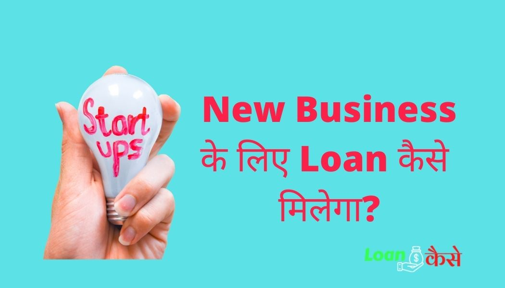

क्या आप भी सोच रहे हैं कि Business ke liye loan kaise milega? Business को शुरू करने के लिए Business के शुरुआत में खूब पैसा लगाना पड़ता है । ये तो आपको पता ही होगा कि पैसा कमाने से पहले पैसा लगाना होता है ।बहुत से लोगो को शायद पता नही होगा की Business शुरू करना अब पहले की तुलना में काफी आसान हो हो गया है।अगर आप भी कोई नया business Start करने जा रहे हैं और आपको भी business के लिए लोन की आवश्यकता है तो आप इस पोस्ट को अंत तक पढ़िए ,तभी आप जैन पाएँगे की business ke liye loan kaise milega ?
दोस्तों जब आप नया नया बिजनेस शुरू करते हैं तो कोई भी बैंक आप पर विश्वास नहीं करता है कि आपका बिजनेस चलेगा या नहीं चलेगा हो सकता है आपने बिजनेस शुरू कर रहे हैं वह आगे चलकर सक्सेस ना हो फेल हो जाए। इसकी आशंका ज्यादा रहती है इसी कारण से कोई भी बैंक आप को लोन देने से कतराती है ।
वहीं अगर कोई पुराना बिजनेस है और उस बिजनेस के अच्छे खासे टर्नओवर हैं तो कोई भी बैंक आसानी से लोन दे देगा क्योंकि उन्हें पता है कि बिजनेस ऑलरेडी स्टेबल हो चुका है।
लेकिन आज हम आपको बताने वाले हैं कि New Business ke liye loan kaise lena है अगर आप हमारे बताए गए स्टेप को फॉलो करेंगे तो आपको अपने नए बिजनेस के लिए लोन लेने में कोई परेशानी नहीं होगी।
{kind=link}

Business ke liye loan lena hai क्या करें ?
आइए जानते हैं कि अगर आपको बिजनेस के लिए लोन लेना है तो आप क्या करेंगे सबसे पहले आपको देखना है कि आप कौन सा बिजनेस करने वाले हैं उस बिजनेस का फ्यूचर क्या है उसके बाद आपको अपने किसी नजदीकी बैंक में या किसी प्राइवेट कंपनी में जो लोन प्रोवाइड करते हैं उनसे संपर्क करना है।
अगर आपका बिजनेस आइडिया बैंक को अच्छा लगेगा और बैंक को आप पर विश्वास हो जाएगा कि आप सही में बिजनेस करने लायक हैं तब आपको लोन प्रोवाइड कर दिया जाएगा।
New business ke liye loan kaise liya jata hai?
आइए जानते हैं कि न्यू बिजनेस के लिए लोन कैसे मिलेगा जैसा कि मैंने ऊपर बताया के नए बिजनेस के लिए लोन लेना थोड़ा मुश्किल होता है, अगर आप न्यू बिजनेस के लिए लोन लेने जा रहे हैं तो सबसे पहला काम आपका होना चाहिए कि आप अपने बिजनेस का प्लान सही-सही बैंक को बताइए यानी कि आप अपने बिजनेस के प्लान को इस तरह से बैंक को बताने हैं कि बैंक को विश्वास हो जाए कि सही में आपका बिजनेस फेल नहीं होगा ।
उसके बाद आपको बैंक में कुछ प्रश्न डाक्यूमेंट्स जैसे बिजनेस रजिस्ट्रेशन, पैन कार्ड, आधार कार्ड, जीएसटी रजिस्ट्रेशन सर्टिफिकेट जैसे कुछ कागजात देखकर बिजनेस लोन के लिए अप्लाई कर देना है।
अगर आपके सारे डॉक्यूमेंट सही रहेंगे बैंक की ओर से आपका लोन अप्रूव कर दिया जाएगा
Business ke liye loan kitana milega?
अब यह बात करते हैं कि बिजनेस के लिए लोन कितना मिलेगा। देखिए सबसे पहले बिजनेस के लिए लोन कितना मिलेगा यह बात डिपेंड करता है कि आपका बिजनेस किस टाइप का है अगर आप छोटा बिजनेस कर रहे हैं तो आपको कम अमाउंट का लोन मिलेगा अगर आप बड़ा बिजनेस कर रहे हैं तो आपको ज्यादा अमाउंट का लोन मिलेगा।
लेकिन लोन अमाउंट सिर्फ बिजनेस का छोटा या बड़ा होना ही काफी नहीं है आपके फाइनेंसियल बैकग्राउंड पर भी डिपेंड करता है कि आपको बिजनेस के लिए कितना लोन मिलेगा।
बिजनेस के लिए लोन कितना मिलेगा यह आप जिस बैंक से लोन ले रहे हैं उस बैंक की वेबसाइट पर जाकर लोन एलिजिबिलिटी चेक कर सकते हैं।
बिजनेस के लिए लोन कितना मिलेगा कैसे चेक करें?
- लोन एलिजिबिलिटी चेक करने के लिए आपको सबसे पहले उस बैंक के ऑफिशियल वेबसाइट पर चले जाना है
- उस लोन केलकुलेटर के टैब पर क्लिक कर देना है।
- यहां आप अपना टर्नओवर इनकम आदि डालकर लोन एलिजिबिलिटी चेक कर सकते हैं।
Business ke liye loan lene के लिए क्या documents लगेंगे?
- सबसे महत्वपूर्ण Documents में पैन कार्ड की जरूरत बिसनेस Loan लेते समय होती है।
- आपको 2-3, वर्ष तक का इनकम टैक्स रिटर्न की आवश्यकता पड़ती है।इसकी भूमिका आपकी इनकम प्रूफ के रूप में होती है।
- आधार कार्ड या निवास प्रमाण का होना अनिवार्य है।
- .आपको अपने Business का एड्रेस प्रूफ देना होता है इसी आधार पर आपको Loan दिया जाता है।
- Bank स्टेटमेंट की आवश्यकता भी पड़ती है इसमें आपके द्वारा किए गए सारे व्यवहार का विवरण दर्ज होता है।
Business ke liye loan Kaise apply Karen?
बिसनेस Loan लेने के लिए आपको आवेदन करने का आसन तरीका नीचे बताया गया है ।आप इसको फॉलो कर सकते है।
स्टेप 1.सबसे पहले आपको प्रमुख Loan संस्थानों द्वारा ऑफर किए गए सभी बिसनेस Loan की विकल्पों की जांच करके और तुलना करने के लिए paisabazaar.com पर विजिट करे
स्टेप 2.इसके बाद आपको अपना नाम मोबाइल नंबर निवास और Loan राशि के अतिरिक्त विभिन्न महत्वपूर्ण जानकारी दर्ज करनी होगी
स्टेप 3.आपके जानकारी दर्ज करने के बाद पैसा बाजार के कस्टमर केयर एजेंट आपके माध्यम से दी गई जानकारियों को वेरिफाइड करने के बाद आपके चुने हुए Loan विकल्प पर चर्चा करने के लिए आपसे खुद संपर्क करेगे ।
स्टेप 4.अब आपको बिसनेस Loan का आवेदन वेरिफिकेशन के लिए संबंधित Bank को भेजा जाएगा और इसके बाद Bank के एजेंट Loan औपचारिकताओं को आगे बढ़ाने के उद्देश से आपसे संपर्क करेगें।
स्टेप 5.आपके Loan आवेदन को स्वीकार हो जाने के बाद कही आपको तय कार्य दिवस पर अप्रूव्ड Loan राशि आपके अपने Bank अकाउंट में डिसबर्स कर दी जाएगी।
इस प्रकार से अब तक आपको समझ ही आ गया होगा की new business ke liye loan kaise liya jata hai? इसके लिए क्या कुछ करना होता है।
-
कंक्लुजन निष्कर्ष:
तो दोस्तों आज आपने जाना कि नए बिजनेस के लिए लोन कैसे लिया जाता है, अगर अगर आपका बिजनेस नया है तो आप बिजनेस के लिए लोन कैसे अप्लाई कर सकते हैं, नए बिजनेस के लिए लोन लेते समय आपको क्या क्या डाक्यूमेंट्स देने होंगे यह सब आपने जाना .अगर आपको यह पोस्ट अच्छी लगी हो तो प्लीज अपने दोस्तों के साथ शेयर करें और अगर आप भी नया कोई भी बिजनेस शुरू करने जा रहे हैं ,और आपको लोन लेने में कोई कठिनाई हो रही है तो आप नीचे कमेंट कीजिए मैं उसका रिप्लाई जरूर दूंगा धन्यवाद।